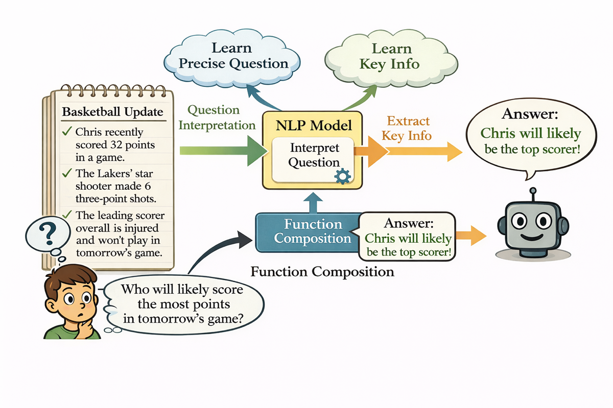

Why it matters왜 중요한가
Hybrids are everywhere in production (Nemotron-H, Jamba…), yet their advantage was purely empirical. This is the first principled account of when the mix beats either pure architecture.
하이브리드는 이미 현업(Nemotron-H, Jamba 등)에 깔려 있지만, 그 이점은 순전히 경험적이었다. 이 논문은 언제 혼합이 순수 구조를 이기는지를 처음으로 원리적으로 설명한다.
Transformers are expressive but their working memory scales linearly with input length; SSMs are efficient but their fixed-size state limits long-context recall. Each pays a price on one axis. The authors formalize two memory budgets — input-independent (parameters) and input-dependent (working state) — and prove that for function-composition tasks each pure architecture is forced to pay unboundedly on one budget. A hybrid sidesteps both by letting the SSM compress the long context and the Transformer do a small local lookup on that summary. It reframes "why hybrids work" as a provable separation, not a benchmark fluke.
Transformer는 표현력은 좋지만 작업 메모리가 입력 길이에 선형으로 커지고, SSM은 효율적이지만 고정 크기 상태 때문에 장문 회상이 제한된다. 둘 다 한 축에서 비용을 치른다. 저자들은 두 메모리 예산 — 입력 비의존(파라미터)과 입력 의존(작업 상태) — 을 형식화하고, 함수 합성 과제에서 각 순수 구조가 한쪽 예산을 무한정 치르도록 강제됨을 증명한다. 하이브리드는 SSM이 긴 문맥을 압축하고 Transformer가 그 요약 위에서 작은 국소 조회를 하도록 분담해 양쪽을 모두 피한다. "하이브리드가 왜 통하는가"를 벤치마크 운이 아닌 증명 가능한 분리(separation)로 재정의한다.

By the numbers핵심 숫자
to match pure models (selective copy)하이브리드가 순수 모델과 동률 내는 데
필요한 파라미터 (selective copy)
hybrid constructions증명된 하이브리드 구성의
층 수
recall; pure models never >40%하이브리드의 assoc. recall 정확도;
순수 모델은 40% 초과 못함
generalization vs Transformers길이 일반화에서 Transformer 대비
더 높은 정확도
(hybrid vs pure)OOD 강건성 우위
(하이브리드 vs 순수)
provably needs (avoided by hybrid)순수 Transformer가 증명상 필요한
윈도우 (하이브리드는 회피)
Results — hybrids match pure models at a fraction of the size결과 — 하이브리드는 작은 크기로 순수 모델을 따라잡는다
| Task | Pure SSM (state) | Pure TF (window) | Hybrid |
|---|---|---|---|
| Selective copying | Ω(N log M) | Ω(L) | 2-layer · O(|V|) state, O(N) window |
| Assoc. recall + decode | Ω(W log W) | Ω(L) | 3-layer · O(|V|) state, Õ(|V|) window |
| Selective copy (learned) | ~0.9 @ 6× params | ~0.9 @ 6× params | ~1.0 @ 1× (SSM→TF) |
| Assoc. recall (learned) | <40% | <40% | >50% (only arch to clear it) |
In one diagram한 장의 그림
The idea: prove a separation, then build the hybrid that beats it아이디어: 분리를 증명하고, 그걸 깨는 하이브리드를 만든다
Pure-model lower bounds
Using an injectivity condition (the context is recoverable from a few queries) and information theory (Fano), they show any k-layer SSM needs state Ω(m log|V|) scaling with context length. With R-local sensitivity, any sliding-window Transformer needs cumulative window ΣWi ≥ R — i.e., Ω(L) when relevance is far back.
주입성 조건(몇 개 질의로 문맥 복원 가능)과 정보이론(Fano)으로, 어떤 k층 SSM도 문맥 길이에 비례하는 Ω(m log|V|) 상태가 필요함을 보인다. R-국소 민감도 하에선 어떤 sliding-window Transformer도 누적 윈도우 ΣWi ≥ R, 즉 관련 정보가 멀면 Ω(L)이 필요하다.
Shallow hybrid that wins
A 2-layer (Mamba→Attention) construction solves selective copying with O(|V|) state and an O(N) window; a 3-layer (Mamba + 2 attention) solves associative-recall-with-decoding with Õ(|V|) window. Both stay tiny while pure models blow up on one budget.
2층(Mamba→Attention) 구성은 O(|V|) 상태와 O(N) 윈도우로 selective copying을 풀고, 3층(Mamba+attention 2개)은 Õ(|V|) 윈도우로 decoding 동반 associative recall을 푼다. 순수 모델이 한 예산에서 폭증하는 동안 둘 다 작게 유지된다.
How it works어떻게 작동하나
- Define the task family과제 계열 정의M(x) = F(u(x), v(x)): extract essential context u and a small control parameter v from a long input, then combine — modeling real "query a long document" workloads.M(x) = F(u(x), v(x)): 긴 입력에서 핵심 문맥 u와 작은 제어 변수 v를 뽑아 결합 — "긴 문서에 질의" 실제 작업을 모델링.
- Lower-bound pure models순수 모델 하한Reduce multi-layer SSMs to a single layer and apply Fano to bound state; use R-local sensitivity to bound the Transformer's cumulative window.다층 SSM을 단층으로 환원해 Fano로 상태를 하한하고, R-국소 민감도로 Transformer 누적 윈도우를 하한한다.
- Construct the hybrid하이브리드 구성SSM summarizes the long context into a small state (e.g., most-recent number token); attention does the relative/last-occurrence lookup on that summary with a small window.SSM이 긴 문맥을 작은 상태(예: 가장 최근 숫자 토큰)로 요약하고, attention이 그 요약 위에서 작은 윈도우로 상대 위치·마지막 출현 조회를 수행.
- Validate empirically실증 검증Train pure/hybrid models to convergence; hybrids match at ~6× fewer params, generalize ~10% better to longer lengths, and are >15% more OOD-robust.순수·하이브리드를 수렴까지 학습; 하이브리드는 ~6배 적은 파라미터로 동률, 더 긴 길이에 ~10% 더 잘 일반화, OOD에 >15% 더 강건.
What to take away그래서, 가져갈 것
Order matters. SSM→TF (encode long context first, then look up) is the winning order; TF→SSM behaved like pure models. A concrete design rule for hybrid stacks.
순서가 중요하다. SSM→TF(긴 문맥 먼저 인코딩 후 조회)가 이기는 순서. TF→SSM은 순수 모델처럼 행동했다. 하이브리드 설계의 구체적 규칙.
It's a provable separation. Each pure architecture is forced to pay unboundedly on one memory budget; the hybrid avoids both — not a benchmark coincidence.
증명 가능한 분리다. 각 순수 구조는 한 메모리 예산을 무한정 치르도록 강제되고, 하이브리드는 둘 다 피한다 — 벤치마크 우연이 아니다.
"Extract-then-lookup" is the sweet spot. The function-composition family names exactly the tasks where hybrids should be expected to help — a useful lens for picking architectures.
"추출 후 조회"가 스위트스팟. 함수 합성 계열은 하이브리드가 도움이 될 과제를 정확히 지목한다 — 구조 선택의 유용한 렌즈.
Better generalization too. Beyond efficiency, hybrids degraded more slowly on longer-than-trained inputs and held up better under distribution shift.
일반화도 더 좋다. 효율을 넘어, 하이브리드는 학습보다 긴 입력에서 덜 무너졌고 분포 이동에도 더 잘 버텼다.